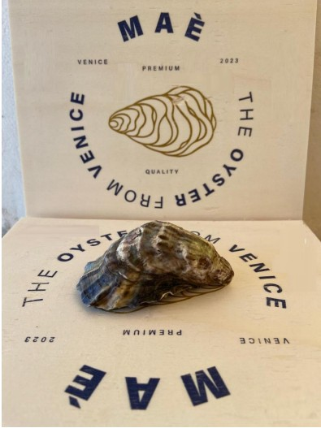
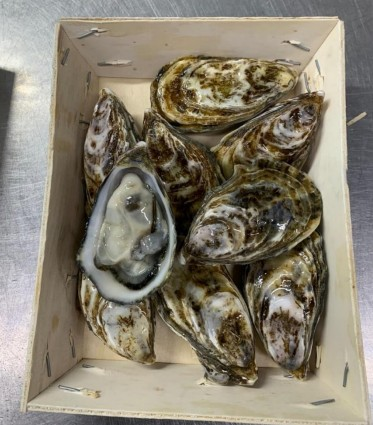

Ostrica Maè - The Oyster from Venice
L’ostrica Maè è coltivata nella laguna veneta e si distingue per il suo gusto raffinato e la polpa corposa. Perfetta per i palati più esigenti, unisce tradizione e qualità. L’ostrica MAE’ si caratterizza per il guscio spesso e levigato, di forma marcatamente concava, che lo distingue al primo impatto dalla maggior parte dei prodotti presenti sul mercato; La forma della conchiglia dipende dalla tecnica di allevamento che ha richiesto alcuni anni di prove per la messa a punto, proprio per la differenza tra l’ambiente della Laguna di Venezia e la maggior parte dei siti italiani ed esteri dove l’ostrica viene coltivata. L’ostrica MAE’ ricade nella categoria che in Francia viene definita ostrica “speciale” per distinguerla dall’ ostrica “fine”, in ragione dell’ottimo rapporto mollusco-guscio; la parte molle all’interno infatti è abbondante, in quanto la concavità della conchiglia consenteampio spazio per il mollusco. Il sapore intenso che caratterizza l’ostrica Maè dipende dalla qualità delle microalghe di cui si nutre, che è specifica di ogni sito di allevamento, e che attribuisce al mollusco una personalità diversa. L’intensità del sapore di sale non prevale su quello dell’ostrica e la fa apprezzare dalla maggior parte dei consumatori; risulta infatti che se il sapore del sale è troppo intenso, copre quello dell’ostrica, se troppo tenue, può far perdere all’ostrica le caratteristiche di mollusco marino. La Laguna di Veneziaècaratterizzata da un elevato ricambio di acqua che arriva dal mare ed è poco influenzata dall’acqua dolce dei fiumi, questo attribuisce all’ostrica MAE’ l’equilibrato tenore di sale che viene percepito nel gustarla. La filiera corta, nel territorio nazionale, garantisce le qualità organolettiche di partenza per oltre dieci giorni. Il calibro più richiesto dell’ostrica Maè è il numero 5-6 (16-20 ostriche per kg). La confezione più richiesta è da 1 kg; disponibile anche da 2 kg
